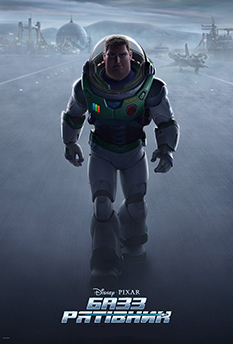

мультфільм.
Прем'єра в Україні 5 травня 2022.
Зла чаклунка вдалася до темної магії та перетворила принца Алекса на мишу.
Врятувати принца допоможе чарівне зілля.
Щоб знайти його, Попелюшка та її вірні друзі вирушили в мандрівку, яка обіцяє багато пригод і випробувань.
Ця подорож допоможе відважним героям зрозуміти, що найкращі ліки – це справжня дружба.
мультфільм.
Прем'єра в Україні 19 травня 2022.
 У мультфільмі «DC Ліга Супер-Улюбленців» Суперпес Крипто і Супермен – друзі-нерозлийвода.
У мультфільмі «DC Ліга Супер-Улюбленців» Суперпес Крипто і Супермен – друзі-нерозлийвода.
Вони володіють однаковими суперсилами і пліч-о-пліч протистоять злочинності у Метрополісі.
Одного разу поганці викрадають Супермена і решту членів Ліги Справедливості.
Тепер Крипто має переконати драну банду-двір-команду – Гончака Аса, вислобрюху свинку Пі-Бі, черепаху Мертона і білку Чіпа – оволодіти своїми щойно набутими суперсилами і допомогти врятувати супергероїв.
мультфільм.
Прем'єра в Україні 16 червня 2022.
Науково-фантастична пригодницька анімація від Disney та Pixar представляє історію походження Базза Рятівника, легендарного космічного рейнджера, який завоює любов цілого покоління шанувальників.